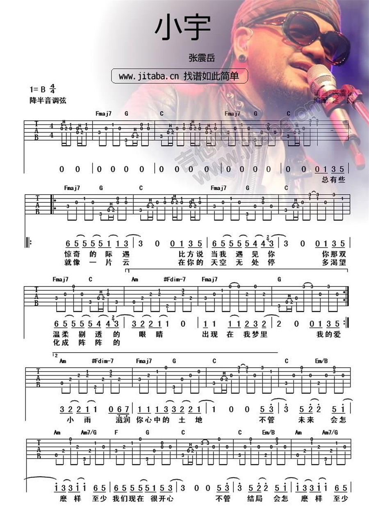

张震岳《小宇》吉他谱（单吉他重新编配Solo）
算个引子
一直很喜欢阿岳的《小宇》，简单、真诚的情感流露。当然，这首青涩的情歌也成了泡妹子必备/必杀歌曲之一（虽然我不是这个目的你们爱信不信）。不过网络上大多只有主歌和副歌的和弦谱（Solo部分为和弦分解），比较完善的谱子虽然有前奏尾奏和独立Solo，但Solo部分普遍是双吉他配合的，因此没法一个人完成弹(zhuang)唱(x)，毕竟你不能和妹子单独约个会还叫上兄弟吧。
于是乎，寡人就想着自己捣鼓一个（听起来好牛X的样子）。可是因为拖延症就一直没搞…… 昨晚上突然大脑充血，“做个文艺B”的口号响彻脑门，趁着荷尔蒙还不知道是多巴胺的那股劲儿，就草草编配了一下。
Solo

电子合成音效果试听：
本Solo谱是根据下面这个主谱来编配，因此什么都得按照主谱子来：标准调弦降半音。
主谱
下面上主谱，版权归原作者和www.jitaba.cn所有。其中我标红色的部分替换成我编配的Solo即可。
需要注意的是，原版的伴奏从我标黄色的部分开始有鼓点的配合，因此请即兴加入闷音模仿鼓的节奏，这样和Solo部分的感觉相似，可以平滑过渡，同时提升整个曲子的Feel。



从遵循原版的角度来说，原版Solo结束后为：
我不管未来会怎麽样 至少我们现在很开心 我不管结局会怎麽样 至少想念的人是你 我不管未来会怎麽样 但我每天都想见到你 我不管结局会怎麽样 我想真的跟你在一起 如果你还是没法相信 真的没关系 我会安静的离去
加粗部分是主谱漏掉的，只需要重复一下几个和弦即可。
Enjoy!